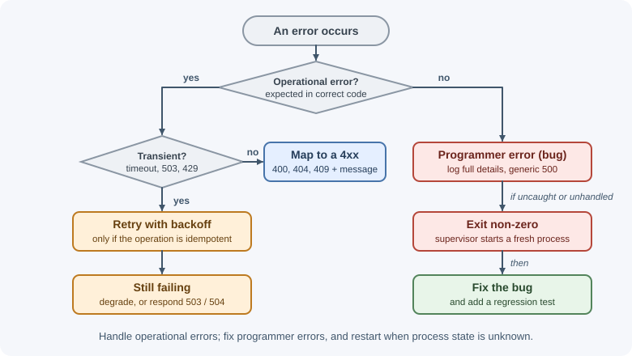
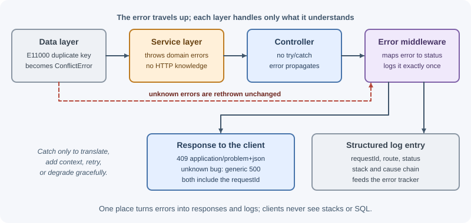

Error Handling¶
Error handling is how a backend detects failures and responds in a controlled way. A backend will meet invalid input, missing records, conflicting updates, slow or unavailable dependencies, and plain programming mistakes. Good error handling turns each of these into a predictable response for the client and useful diagnostics for the people running the system.
Why it matters¶
Failures are normal in networked systems: databases restart, third-party APIs
time out, users send bad data, and code has bugs. Without a deliberate
strategy, an application may crash on the first unexpected value, return
200 OK with an error message buried in the body, expose stack traces and
connection strings, or silently lose data.
With a clear strategy:
- Clients get consistent, correct status codes and machine-readable errors.
- Users see helpful messages, not internal details.
- Operators get logs and alerts with enough context to fix the problem.
- Transient failures are retried, and real bugs are surfaced instead of hidden.
Real-world usage¶
- Stripe returns structured errors with a
type(such asinvalid_request_error), a human-readablemessage, and aparamnaming the field at fault (Stripe API: errors). Every request also gets an identifier in theRequest-Idresponse header, which Stripe asks you to quote when contacting support (Stripe API: request IDs). - Google APIs follow AIP-193: services must return a
google.rpc.Statusmessage with canonical error codes when an API error occurs, so clients can share one error-handling path (AIP-193: Errors). - Zalando makes RFC 9457 mandatory in its public RESTful API guidelines:
APIs "MUST support problem JSON" using
application/problem+json(Zalando RESTful API Guidelines).
Popular tools: error trackers such as Sentry, Rollbar, Bugsnag, and the
error-tracking features of Datadog and New Relic; libraries such as
http-errors for typed HTTP errors in Node.js.
How it works¶
Categories of errors¶
Operational errors are expected failure conditions in a correct program:
- Invalid input or validation failure.
- Record not found.
- Permission denied.
- Conflict (duplicate email, outdated version).
- Dependency failure: database unreachable, upstream timeout, rate limited.
Programmer errors are bugs:
- Reading a property of
undefined. - Passing the wrong type to a function.
- Forgetting to
awaita promise. - A broken assumption ("this list is never empty").
Operational errors are handled: map them to a response and continue.
Programmer errors are fixed: log them loudly, return a generic 500, and, if
the process may be in an inconsistent state, restart it.
A second useful split:
| Transient | Permanent | |
|---|---|---|
| Meaning | Might succeed if tried again | Will fail the same way every time |
| Examples | Network timeout, 503, connection reset, deadlock, 429 |
Validation error, 404, 403, malformed request |
| Action | Retry with backoff (if the operation is idempotent) | Do not retry; return the error |
See timeouts, retries, and idempotency.
Fail fast versus graceful degradation¶
- Fail fast: detect problems as early as possible and stop. Validate configuration at startup and refuse to boot if a required value is missing. Reject invalid requests before doing any work. A loud early failure is far cheaper than a quiet late one.
- Graceful degradation: when a non-essential dependency fails, keep the core feature working. If the recommendations service is down, the product page still loads without recommendations. If the cache is unavailable, read from the database (watching for overload).
Decide per dependency: is it essential to this request (fail) or optional (degrade)?

How errors propagate through layers¶
A layered backend lets each layer handle what it understands and pass the rest upward:

- The data layer catches driver-specific errors only to translate them
(for example, MongoDB duplicate key
11000or PostgreSQL unique violation23505→ConflictError). Unknown errors are rethrown unchanged. - The service layer throws domain errors that describe business problems
(
NotFoundError,InsufficientStockError) and knows nothing about HTTP. - The controller usually does not catch at all; errors flow to the framework.
- The error middleware is the single place that maps errors to HTTP responses and logs them.
Catch an error only where you can do something useful: translate it, add context, retry it, or degrade gracefully. Otherwise let it propagate.
Mapping errors to status codes¶
| Error type | Status | Example |
|---|---|---|
| Validation error | 400 (or 422) |
Missing required field |
| Not authenticated | 401 |
Missing or expired token |
| Not authorized | 403 |
User lacks permission |
| Not found | 404 |
No order with that ID |
| Conflict | 409 |
Email already registered; version mismatch |
| Precondition failed | 412 |
If-Match ETag does not match |
| Too large | 413 |
Upload exceeds the limit |
| Rate limited | 429 |
Too many requests |
| Unexpected bug | 500 |
Unhandled exception |
| Upstream bad response | 502 |
Payment provider returned garbage |
| Dependency unavailable | 503 |
Database down, maintenance |
| Upstream timeout | 504 |
Upstream did not respond in time |
Full details: HTTP status codes.
Consistent error responses: problem details¶
Clients handle errors much more easily when every endpoint uses the same
shape. RFC 9457 (Problem Details for HTTP APIs) defines a standard JSON
format with media type application/problem+json:
{
"type": "https://api.example.com/problems/insufficient-stock",
"title": "Insufficient stock",
"status": 409,
"detail": "Only 2 units of this product are available.",
"instance": "/api/orders",
"requestId": "req_7f3a9c"
}
| Member | Meaning |
|---|---|
type |
A URI identifying the problem type (stable; clients can switch on it) |
title |
Short, human-readable summary of the problem type |
status |
The HTTP status code |
detail |
Human-readable explanation of this occurrence |
instance |
A URI identifying this occurrence |
| extensions | Any extra members, such as errors (field list) or requestId |
Even if you do not adopt RFC 9457 exactly, include a stable error code the client can program against, a safe message, and a request ID.
User-facing versus internal messages¶
- User-facing: what went wrong and what to do — "This email is already registered. Try signing in instead."
- Internal: stack trace, SQL, file paths, upstream response, user ID — goes to logs only.
For 500 errors, the client should see something generic ("Something went
wrong. Please try again. Reference: req_7f3a9c") while the full error is
logged with the same request ID. Never expose stack traces, database errors,
or secrets in production responses.
Logging with context¶
A log line that says only Error: connection refused is hard to act on.
Include:
- A request or correlation ID that also appears in the response, so a support ticket can be traced to the exact log entries.
- The route, method, and status code.
- Relevant identifiers (user ID, order ID) — not passwords, tokens, or sensitive personal data.
- The error name, message, stack, and
causechain.
Log each error once, at the place it is handled (usually the error middleware). Logging and rethrowing at every layer creates duplicate noise. See logging, monitoring, and tracing.
Never swallow errors¶
// Swallowed: the failure disappears and the caller thinks it worked
try {
await sendInvoiceEmail(order);
} catch (error) {}
Every catch must do at least one of: handle it (fallback, retry),
translate and rethrow, or log it and deliberately continue with a documented
reason. An empty catch hides bugs and data loss.
Preserving the cause¶
When translating an error, keep the original with the standard cause
option so the root cause is not lost:
try {
await paymentClient.charge(order);
} catch (error) {
throw new PaymentFailedError("Card charge failed", { cause: error });
}
Error tracking tools¶
Error tracking services (such as Sentry, Rollbar, or the error features of APM tools) capture exceptions with stack traces, group duplicates, show how many users are affected, link to releases, and alert the team. Logs tell you what happened; error trackers tell you which bugs matter most.
Crash and restart¶
For programmer errors that escape all handlers — an uncaught exception or an unhandled promise rejection — Node's process may be in an unknown state (half-finished operations, leaked resources). The robust approach:
- Log the error with full detail.
- Stop accepting new requests and let in-flight ones finish if possible.
- Exit with a non-zero code.
- Let a supervisor (container orchestrator, systemd, PM2) start a fresh process, while other instances behind the load balancer keep serving.
Trying to keep a corrupted process alive usually produces stranger failures later. See errors, debugging, and performance in Node.js.
When to use and when not to use¶
Every backend needs error handling; these are the choices to make for each failure.
Fail fast when:
- Configuration is missing or invalid at startup.
- Input is invalid — reject it before doing any work.
- A dependency that the request cannot work without is down.
Degrade gracefully when:
- An optional dependency fails (recommendations, avatars, analytics) and the core feature can still work.
Retry when:
- The failure is transient and the operation is idempotent or protected by an idempotency key.
Do not:
- Retry validation errors, authorization failures, or bugs.
- Catch errors only to log and rethrow them at every layer.
- Keep running after an uncaught exception.
| Failure | Response to the client | What the server does |
|---|---|---|
| Invalid input | 400 or 422 with field errors | Nothing else; no retry |
| Missing record | 404 | Nothing else |
| Duplicate or version conflict | 409 or 412 | Nothing else |
| Optional dependency down | 200 with partial data | Log a warning, alert if sustained |
| Required dependency down | 503 (or 502 / 504) | Retry with backoff if idempotent; alert |
| Unexpected bug | Generic 500 with request ID | Log with stack, report to error tracker |
| Uncaught exception | Connection may drop | Log, exit, let the supervisor restart |
Practical examples¶
Domain error classes¶
// errors.js
export class AppError extends Error {
constructor(message, { status = 500, code = "INTERNAL_ERROR", cause } = {}) {
super(message, { cause });
this.name = this.constructor.name;
this.status = status;
this.code = code;
this.expose = status < 500; // client-caused: safe to show the message
}
}
export class ValidationError extends AppError {
constructor(message, errors = []) {
super(message, { status: 400, code: "VALIDATION_ERROR" });
this.errors = errors;
}
}
export class NotFoundError extends AppError {
constructor(message = "Resource not found") {
super(message, { status: 404, code: "NOT_FOUND" });
}
}
export class ConflictError extends AppError {
constructor(message, options) {
super(message, { status: 409, code: "CONFLICT", ...options });
}
}
A worked example across layers¶
// Data layer: translate driver errors, rethrow the rest
export async function insertUser(user) {
try {
return await db.collection("users").insertOne(user);
} catch (error) {
if (error.code === 11000) {
throw new ConflictError("Email already registered", { cause: error });
}
throw error; // unknown: let it propagate unchanged
}
}
// Service layer: business rules, no HTTP knowledge
export async function registerUser(input) {
if (await isDisposableEmail(input.email)) {
throw new ValidationError("Disposable email addresses are not allowed");
}
const passwordHash = await hashPassword(input.password);
return insertUser({ email: input.email, passwordHash });
}
// Controller: no try/catch; Express 5 forwards rejected promises
app.post("/api/users", async (request, response) => {
const user = await registerUser(request.validated.body);
response.status(201).json({ id: user.insertedId });
});
// Error middleware: the single place that maps and logs
app.use((error, request, response, next) => {
if (response.headersSent) {
return next(error); // let Express close the connection
}
const known = error instanceof AppError;
const status = known ? error.status : 500;
// Only our own codes reach the client; driver errors may carry numeric codes
const code = known ? error.code : "INTERNAL_ERROR";
request.log.error({ err: error, requestId: request.id, status }, "request failed");
response
.status(status)
.type("application/problem+json")
.json({
type: `https://api.example.com/problems/${code.toLowerCase()}`,
title: known && error.expose ? error.message : "Internal server error",
status,
requestId: request.id,
...(error.errors ? { errors: error.errors } : {}),
});
});
In this example, duplicate registrations become a clean 409, disposable
emails become 400, and any unexpected bug becomes a generic 500 whose full
details are only in the logs. Express-specific details — async errors in
Express 4 versus 5, the four-argument signature, 404 handlers — are in
error handling in Express, and
middleware ordering is covered in middleware.
Best practices¶
- Separate operational errors (handle) from programmer errors (fix, restart).
- Translate low-level errors into domain errors at the layer boundary.
- Handle and log errors in one central place; log each error once.
- Use correct status codes and a consistent error format (RFC 9457 or similar).
- Include a request ID in every error response and log line.
- Keep internal details out of responses; keep secrets out of logs.
- Never write empty
catchblocks; preservecausewhen rethrowing. - Retry only transient failures, only for idempotent operations, with backoff.
- Validate configuration at startup and fail fast.
- Crash and restart on unknown errors; run multiple instances so a restart is invisible.
In production¶
- Error responses suddenly turn into HTML. Symptom: clients fail with
Unexpected token '<'while parsing a 500 response. Detect: 5xx responses withContent-Type: text/html. Cause: the error handler itself threw (for example, calling a string method on a driver error whosecodeis a number), or it was registered before the routes, so Express's built-in handler answered. Fix: keep the error handler defensive, register it last, and test it with unexpected error types. - Work silently disappears. Symptom: customers report missing
confirmation emails, but no errors were logged. Detect: a business metric
gap, such as orders placed versus confirmations sent. Cause: an empty
catch, or a promise that was never awaited. Fix: log and alert in everycatch, move side effects to a job queue with retries, and enable lint rules against empty blocks and floating promises. - The service is stuck in a crash loop. Symptom: the load balancer
returns 502 and Kubernetes reports
CrashLoopBackOff. Detect: restart count rises, and the same uncaught exception appears in each instance's last log lines. Cause: a bug or bad configuration hit on every start. Fix: validate configuration at startup with clear messages, alert on restart rate, and roll back the release. - Log volume and cost explode. Symptom: the logging bill jumps and real
errors are hard to find. Detect: log volume per message shows the same
error repeated, or client 4xx responses logged at
errorlevel. Cause: each layer logs and rethrows; expected client errors are logged as errors. Fix: log once in the error middleware, log 4xx atinfoorwarn, and sample noisy messages. - Stack traces reach users. Symptom: a security scan finds stack frames
or SQL in error responses. Detect: search response bodies for stack-frame
lines. Cause:
NODE_ENVis notproduction, and Express's built-in error handler includes the stack trace outside production; or a custom handler sendserror.messagefor every error. Fix: setNODE_ENV=productionand expose messages only for known client errors.
Important terminology¶
- Operational error: an expected failure condition, such as a missing record or timeout.
- Programmer error: a defect in the code.
- Transient error: a failure that may succeed on retry.
- Domain error: an error expressed in business terms, independent of HTTP.
- Error middleware: framework code dedicated to handling errors centrally.
- Problem details: the RFC 9457 standard JSON error format.
- Correlation ID / request ID: an identifier linking a response to its log entries.
- Error cause: the original error attached to a new, higher-level error.
- Graceful degradation: continuing with reduced functionality when a non-essential part fails.
- Fail fast: detecting and stopping on problems as early as possible.
Common mistakes and misconceptions¶
- Returning
200with{ "error": ... }. Clients, proxies, and monitoring treat it as success. - Returning
500for client mistakes. Bad input is a4xx. - Exposing stack traces or database messages to clients in production.
- Swallowing errors with empty
catchblocks. - Logging the same error at every layer, producing duplicate noise.
- Assuming
try/catchcatches everything. It does not catch errors from callbacks or promises that are not awaited inside it. - Retrying non-idempotent operations blindly, causing duplicate charges.
- Keeping a process alive after an uncaught exception.
Revision questions¶
- What is the difference between operational and programmer errors, and how should each be handled?
- Why should the service layer throw domain errors rather than HTTP errors?
- What are the members of an RFC 9457 problem details response?
- Why should each error be logged once, and where?
- Which errors are safe to retry, and what else must be true about the operation?
- Why is restarting the process the recommended response to an uncaught exception in Node.js?